Truesilver items were introduced in R++. They are very light, but cannot be smithed, as there are no truesilver ingots.
| Weapon category | Special properties |
|---|---|
| Unarmed fighting | No weapons – use boxing gloves and bracers of boxing, or kicking; cannot be disarmed; incompatible with True Berserking |
| Daggers & knives | Daggers get a greater damage modifier from Backstabbing than other types of weapons, x5 damage modifiers for lvl 12+ Thieves and Assassins and x3 for other classes. |
| Clubs & hammers | Torches belong here. |
| Maces & flails | Features two powerful special weapons: undead-slaying maces of disruption and the high damage maces of destruction. |
| Swords | Most variety; sword of sharpness |
| Axes | |
| Whips | Whips use Dexterity as primary attribute instead of Strength; can be used to increase alignment (use them in the tool slot). |
| Polearms | Highest DV bonus; polearms can be one or two handed. |
| Two-handed weapons | As of R+, two-handed weapons use double Strength bonus. |
| Staves | All staves are two-handed. |
| Magic Staves | Can be used or zaped to release unique magic, then they recharge; see 0.14.17. |
| Slings | Slings are used to fire rocks, all types of sling bullets, potions, lumps of clay, and gems. |
| Bows | Bows are used to fire all types of arrows. |
| Crossbows | Hand crossbows are be used to fire black hurthling quarrels and dark elven quarrels. Other types of crossbows are be used to fire all other types of quarrels. |
| Thrown rocks & clubs | |
| Thrown daggers | Most daggers and knives have the same stats thrown as wielded and do not induce to hit penalties for being used as missiles. |
| Thrown spears | Javelins belong here. |
| Thrown axes & hammers | No specialized weapons exist for this category. |
| Boomerangs & scurgari |
| Name | UnID'd name | Weight | Melee damage | Missile damage | Made of | Special | Tile |
|---|---|---|---|---|---|---|---|
| Daggers & knives | |||||||
| knife | 8s | (+0,1d3) | (+0,1d3) | iron | 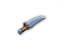 | ||
| rabbit knife | knife | 8s | (+0,1d3+4) | (+0,1d3+4) | iron | slays battle bunnies |
|
| orcish knife | crude knife | 10s | (+0,1d3+2) | (+0,1d3+2) | iron |
| |
| knife of endurance | knife | 8s | (+6,1d3+6) | (+0,1d3) | iron | {To+4} *Rgen | 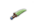 |
| scalpel | 2s | (+2,1d3+1) | (+0,1d3) | iron |
| ||
| mithril scalpel | scalpel | 1s | (+2,1d3+4) | (+0,1d3+3) | mithril | [3] | |
| truesilver scalpel | scalpel | 1s | (+5,1d3+4) | (+3,1d3+3) | truesilver |
| |
| dagger | 10s | (+0,1d4) | (+0,1d4) | iron | 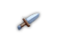 | ||
| mithril dagger | dagger | 8s | (+0,1d4+3) | (+0,1d4+3) | mithril |
| |
| adamantium dagger | dagger | 7s | (+0,1d4+5) | (+0,1d4+5) | adamantium | 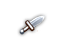 | |
| eternium dagger | dagger | 5s | (+0,2d4+7) | (+0,2d4+7) | eternium |
| |
| truesilver dagger | dagger | 2s | (+3,1d4+3) | (+3,1d4+3) | truesilver |
| |
| crystal dagger | 25s | (+0,2d3+4) | (+0,1d4+2) | crystal |
| ||
| skull dagger | 10s | (+0,1d4+1) | (+0,1d4) | iron | |||
| orcish dagger | 10s | (+1,1d4+2) | (+0,1d4) | iron |
| ||
| bloody dagger | orcish dagger [2] | 10s | (+3,2d3+5) | (+0,1d4) | iron | *Crit 50% |
|
| dagger of death | dagger | 10s | (+1,5d5+2) | (+0,1d4) | iron | 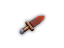 | |
| phase dagger | gray dagger | 5s | (+0,1d4) | (+0,1d4) | iron | *Pene |
|
| Clubs & hammers | |||||||
| club | 30s | (+0,1d6) | (+0,1d4) | wood | |||
| stone club | 70s | (+0,1d6) | (+0,1d4) | stone | invulnerable to acid (jellies) | 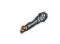 | |
| skull club | 30s | (+0,1d6+1) | (+0,1d4) | wood |
| ||
| trollish war club | club | 100s | (+1,1d8+2) | (-4,1d8+1) | wood | [-1,+0] [3] |
|
| cudgel | 40s | (+0,2d4+1) | (+0,1d4) | wood | [-1,+0] | 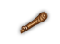 | |
| heavy cudgel | 70s | (-1,2d5+2) | (+0,1d5+1) | wood | [-2,+0] |
| |
| warhammer | 60s | (+0,2d3) | (+0,1d4) | iron | 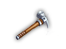 | ||
| mithril warhammer | warhammer | 48s | (+0,2d3+3) | (+0,1d4+3) | mithril |
| |
| adamantium warhammer | warhammer | 43s | (+0,2d3+6) | (+0,1d4+6) | adamantium |
| |
| eternium warhammer | warhammer | 29s | (+0,4d3+8) | (+0,1d4+8) | eternium |
| |
| truesilver warhammer | warhammer | 12s | (+3,2d3+3) | (+3,1d4+3) | truesilver |
| |
| large hammer | 120s | (-1,1d10+2) | (-6,1d6) | iron |
| ||
| large mithril hammer | large hammer | 96s | (-1,1d10+5) | (-6,1d6+3) | mithril | 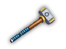 | |
| large adamantium hammer | large hammer | 89s | (-1,1d10+8) | (-6,1d6+6) | adamantium | 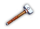 | |
| large eternium hammer | large hammer | 55s | (-1,2d10+10) | (-4,1d6+8) | eternium |
| |
| large truesilver hammer | large hammer | 24s | (+2,1d10+5) | (-3,1d6+3) | truesilver |
| |
| Maces & flails | |||||||
| morning star | 175s | (+1,2d5+1) | (+0,2d3) | iron | [-2,+0] | 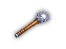 | |
| mace | 100s | (+0,1d6+1) | (+0,1d4) | iron | 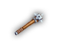 | ||
| mithril mace | mace | 80s | (+0,1d6+4) | (+0,1d4+3) | mithril | 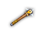 | |
| adamantium mace | mace | 72s | (+0,1d6+6) | (+0,1d4+5) | adamantium |
| |
| eternium mace | mace | 55s | (+0,2d6+8) | (+0,2d4+7) | eternium |
| |
| truesilver mace | mace | 20s | (+3,1d6+4) | (+3,1d4+3) | truesilver | 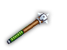 | |
| heavy mace | 200s | (+3,2d5+3) | (+0,1d4) | iron | [-2,+0] | 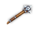 | |
| mace of destruction | mace | 120s | (+2,5d6+6) | (-4,3d4+7) | adamantium |
| |
| mace of disruption | 100s | (+2,2d4+2) | (+0,1d4) | iron | !Unde |
| |
| flail | 150s | (+0,2d4+2) | (+0,1d4) | iron | |||
| mithril flail | flail | 120s | (+0,2d4+5) | (+0,1d4+3) | mithril | 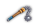 | |
| adamantium flail | flail | 108s | (+0,2d4+8) | (+0,1d4+6) | adamantium | ||
| eternium flail | flail | 66s | (+0,4d4+10) | (+0,1d4+8) | eternium |
| |
| truesilver flail | flail | 30s | (+3,2d4+5) | (+3,1d4+3) | truesilver | 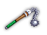 | |
| heavy flail | 200s | (+2,4d4+2) | (+0,2d4) | iron | [-3,+0] *TwoH | ||
| Swords | |||||||
| short sword | 30s | (+0,1d6) | (-4,1d3) | iron |
| ||
| mithril short sword | short sword | 24s | (+0,1d6+3) | (+0,1d6+3) | mithril | [3] |
|
| adamantium short sword | short sword | 22s | (+0,1d6+6) | (+0,1d6+6) | adamantium | [3] | 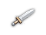 |
| eternium short sword | short sword | 20s | (+0,2d6+7) | (+0,2d6+7) | eternium | [3] |
|
| truesilver short sword | short sword | 6s | (+3,1d6+3) | (+3,1d6+3) | truesilver | 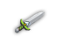 | |
| long sword | 40s | (+0,1d8) | (-6,1d3) | iron |
| ||
| mithril long sword | long sword | 32s | (+0,1d8+3) | (-6,1d3+3) | mithril | 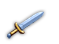 | |
| adamantium long sword | long sword | 28s | (+0,1d8+5) | (-6,1d3+5) | adamantium |
| |
| eternium long sword | long sword | 20s | (+0,2d8+7) | (-4,2d3+7) | eternium |
| |
| truesilver long sword | long sword | 8s | (+3,1d8+3) | (-3,1d3+3) | truesilver | 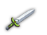 | |
| sword of sharpness | long sword | 35s | (+0,4d8+6) | (-6,1d3+5) | iron |
| |
| broadsword | 80s | (+0,1d7+1) | (-7,1d4+1) | iron | 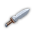 | ||
| mithril broadsword | broadsword | 64s | (+0,1d7+4) | (-7,1d4+4) | mithril |
| |
| adamantium broadsword | broadsword | 57s | (+0,1d7+7) | (-7,1d4+7) | adamantium |
| |
| eternium broadsword | broadsword | 38s | (+0,2d7+9) | (-5,1d4+10) | eternium |
| |
| truesilver broadsword | broadsword | 16s | (+3,1d7+4) | (-4,1d4+4) | truesilver | ||
| scimitar | 40s | (+0,1d8) | (+0,1d4) | iron | |||
| mithril scimitar | scimitar | 32s | (+0,1d8+3) | (+0,1d4+3) | mithril |
| |
| adamantium scimitar | scimitar | 28s | (+0,1d8+6) | (+0,1d4+6) | adamantium |
| |
| eternium scimitar | scimitar | 19s | (+0,2d8+8) | (+0,1d4+8) | eternium |
| |
| truesilver scimitar | scimitar | 8s | (+3,1d8+3) | (+3,1d4+3) | truesilver | ||
| rapier | 30s | (+0,1d6+1) | (-4,1d4) | iron | [+1,+1] [3] | 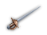 | |
| mithril rapier | rapier | 24s | (+0,1d6+4) | (+0,1d4+3) | mithril | [+1,+1] [3] |
|
| adamantium rapier | rapier | 22s | (+0,1d6+7) | (+0,d4+6) | adamantium | [+1,+1] [3] |
|
| eternium rapier | rapier | 20s | (+0,2d6+8) | (+0,2d6+7) | eternium | [+1,+1] [3] |
|
| truesilver rapier | rapier | 6s | (+3,1d6+4) | (+3,1d4+3) | truesilver | [+1,+1] | 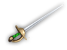 |
| sabre | 30s | (+0,1d6+2) | (-4,1d4+1) | iron | [3] | 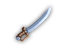 | |
| mithril sabre | sabre | 24s | (+0,1d6+5) | (+0,1d4+4) | mithril | [3] |
|
| adamantium sabre | sabre | 22s | (+0,1d6+8) | (+0,1d4+7) | adamantium | [3] | 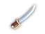 |
| eternium sabre | sabre | 20s | (+0,2d6+10) | (+0,2d6+9) | eternium | [3] | 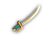 |
| truesilver sabre | sabre | 6s | (+3,1d6+5) | (+3,1d4+4) | truesilver |
| |
| sabre of swiftness | sabre | 30s | (+1,1d6+2) | (-4,1d4+1) | iron | +8 Sp [3] | 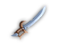 |
| Axes | |||||||
| hand axe | 50s | (+0,1d6) | (+0,1d6) | iron |
| ||
| hatchet | 50s | (+0,1d6+1) | (-1,1d6+1) | iron | used for chopping down trees and Bridge Building |
| |
| pick axe | 75s | (+0,1d6+1) | (+0,1d6-1) | various | used for digging [1]; slays stone monsters | 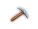 | |
| stone axe | 170s | (+0,1d7+1) | (-4,1d4) | stone | invulnerable to acid (jellies) | 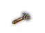 | |
| sickle | 55s | (+0,1d4+2) | (+0,1d4) | iron | can be traded with farmer for large ration |
| |
| battle axe | 70s | (+0,1d6+2) | (-4,1d4) | iron |
| ||
| mithril battle axe | battle axe | 56s | (+0,1d6+5) | (-4,1d4+3) | mithril | 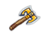 | |
| adamantium battle axe | battle axe | 50s | (+0,1d6+7) | (-4,1d4+5) | adamantium | 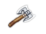 | |
| eternium battle axe | battle axe | 35s | (+0,2d6+9) | (-3,2d4+7) | eternium | 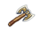 | |
| truesilver battle axe | battle axe | 14s | (+3,1d6+5) | (-1,1d4+3) | truesilver | 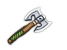 | |
| orcish battle axe | crude battle axe | 120s | (-1,1d7+3) | (-2,1d6+2) | iron | 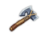 | |
| Whips | |||||||
| whip | 15s | (-4,1d3) | (+0,1d2) | leather |
| ||
| scourge | 25s | (-4,1d3+3) | (+0,1d2+1) | leather |
| ||
| whip of slaughtering | whip | 15s | (-4,1d30) | (+0,1d2) | leather | *Crit 50% | |
| whip of the snake | whip | 15s | (-2,5d2+7) | (+0,1d2) | leather | {Dx+n} (+n Sp) -Pois; n=7 (+3/-3) |
|
| Pole arms 1H | |||||||
| short spear | 40s | (+1,1d6) | (+0,1d4) | iron | 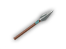 | ||
| spear | 50s | (+1,1d8) | (+0,1d4) | iron |
| ||
| mithril spear | spear | 40s | (+1,1d8+3) | (+0,1d4+3) | mithril | ||
| adamantium spear | spear | 36s | (+1,1d8+6) | (+0,1d4+6) | adamantium |
| |
| eternium spear | spear | 25s | (+2,2d8+8) | (+0,1d4+8) | eternium |
| |
| truesilver spear | spear | 10s | (+4,1d8+3) | (+3,1d4+3) | truesilver | 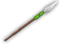 | |
| heavy spear | 100s | (-1,1d8+2) | (-3,1d6+1) | iron | 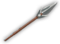 | ||
| stone spear | 120s | (+0,1d8) | (+0,1d4) | stone | invulnerable to acid (jellies) |
| |
| orcish spear | crude spear | 75s | (+1,1d8+2) | (+0,1d6+2) | iron |
| |
[1] Mining with pick axe: 1/40 chance for pick axe break if blessed, 1/6 chance to break if rusty. Pick axes can be prayed for in the elemental temples and royal treasuries levels – the PC must not have a wand of digging or pick axe.
[2] before R+, bloody daggers were called orcish daggers with "bloody dagger" as an unidentified form.
| Name | UnID'd name | Weight | Melee damage | [DV,PV] | Missile damage | Made of | Special | Tile |
|---|---|---|---|---|---|---|---|---|
| Pole arms 2H | ||||||||
| trident | 70s | (+2,3d5+1) | (-2,3d3+2) | iron | 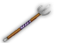 | |||
| scythe | 80s | (+1,2d6+1) | [-1,+0] | (+0,1d3) | iron | 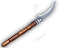 | ||
| halberd | 100s | (+4,2d7+1) | [-2,+0] | (-8,2d4+2) | iron | 
| ||
| mithril halberd | halberd | 80s | (+7,2d7+4) | [-2,+0] | (-5,2d4+5) | mithril | 
| |
| adamantium halberd | halberd | 70s | (+9,2d7+6) | [-2,+0] | (-3,2d4+7) | adamantium | 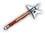 | |
| eternium halberd | halberd | 50s | (+11,4d7+8) | [-2,+0] | (-1,4d4+9) | eternium | 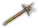 | |
| truesilver halberd | halberd | 20s | (+10,2d7+4) | (-2,2d4+5) | truesilver | 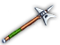 | ||
| halberd of defense | halberd | 80s | (+7,2d7+4) | [+18,+0] | (-5,2d4+5) | iron | 
| |
| long spear | 100s | (+1,1d12) | [+1,+0] | (-1,1d10) | iron | [2] | 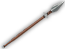 | |
| mithril long spear | long spear | 75s | (+1,1d12+3) | [+1,+0] | (-1,1d10+3) | mithril | [2] | 
|
| adamantium long spear | long spear | 67s | (+1,1d12+5) | [+1,+0] | (-1,1d10+5) | adamantium | [2] | 
|
| eternium long spear | long spear | 50s | (+1,2d12+7) | [+1,+0] | (-1,2d10+7) | eternium | [2] | 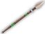 |
| truesilver long spear | long spear | 18s | (+4,1d12+3) | [+1,+0] | (+2,1d10+3) | truesilver | 
| |
| Two-handed weapons | ||||||||
| huge iron hammer | 200s | (-1,2d9+2) | [-3,+0] | (-10,1d10) | iron | [1] | 
| |
| heavy club | 120s | (+1,1d10+2) | [-1,+0] | (-4,1d10+1) | wood | 
| ||
| heavy skull club | 120s | (+1,1d10+3) | [-1,+0] | (-4,1d10+1) | wood | 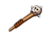 | ||
| great axe | 105s | (+2,2d7+3) | [-2,+0] | (-6,1d10+3) | iron | 
| ||
| two-handed sword | 100s | (+3,3d5+3) | [-1,+0] | (-8,2d4+2) | iron | 
| ||
| mithril two-handed sword | two-handed sword | 80s | (+6,3d5+6) | [-1,+0] | (-5,2d4+5) | mithril | 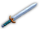 | |
| adamantium two-handed sword | two-handed sword | 70s | (+12,3d5+12) | [-1,+0] | (-3,2d4+7) | adamantium | 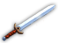 | |
| eternium two-handed sword | two-handed sword | 50s | (+18,6d5+18) | [-1,+0] | (-1,4d4+9) | eternium | 
| |
| truesilver two-handed sword | two-handed sword | 20s | (+9,3d5+6) | (-2,2d4+5) | truesilver | 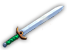 | ||
| two-handed sword of parrying | two-handed sword | 100s | (+3,3d5+3) | [+16,+0] | (-8,2d4+2) | iron | 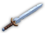 | |
| Staves | ||||||||
| quarterstaff | 40s | (+0,1d10) | (+0,1d4) | wood | 
| |||
| iron-shod quarterstaff | quarterstaff | 80s | (+1,1d10+5) | (+0,1d4+2) | iron | |||
| mithril-shod quarterstaff | quarterstaff | 64s | (+0,1d10+6) | (+0,1d4+6) | mithril | 
| ||
| adamantium-shod quarterstaff | quarterstaff | 57s | (+0,1d10+8) | (+0,1d4+8) | adamantium | 
| ||
| eternium-shod quarterstaff | quarterstaff | 40s | (+0,2d10+10) | (+0,2d4+10) | eternium | |||
| truesilver-shod quarterstaff | quarterstaff | 16s | (+3,1d10+6) | (+3,1d4+6) | truesilver | 
| ||
| quicksilver quarterstaff | quarterstaff | 20s | (+6,5d3+5) | [+3,+0] | (+0,5d2+6) | iron | +20 Sp | 
|
| skull staff | 40s | (+0,1d10+1) | (+0,1d2) | wood | 
| |||
| staff of power | quarterstaff | 40s | (+0,1d10+2) | [+1,+1] | (+0,1d2) | wood | {Wi+4} | 
|
| staff of smiting | quarterstaff | 30s | (+4,1d37+2) | (-4,1d20-4) | wood | 
| ||
| staff of the magi | quarterstaff | 40s | (+2,1d10+2) | [+3,+3] | (+0, 1d2) | wood | {Ma+6} | 
|
[1] Belonged to clubs & hammers before R+.
[2] Added in R+.
| Staff of ... | Weight | Melee damage | [DV,PV] | Missile damage | Effect when used or zapped | Item with similar effect | Base recharge | Made of | Special | Tile |
|---|---|---|---|---|---|---|---|---|---|---|
| beauty | 10s | (+0,1d10) | (+0,1d4) | temporarily boosts Appearance | potion of boost appearance | 1000/4000/8000 | glass | {Ap+6} | 
| |
| charisma | 35s | (+0,1d10) | (+0,1d4) | temporarily boosts Charisma | potion of boost charisma | 500/2000/4000 | gold | {Ch+4} | 
| |
| corruption dissemination | 40s | (+0,1d10) | (+0,1d4) | corruption, chance to curse items | potion of unholy water | 100/400/800 | wood | 
| ||
| dampening | 40s | (+0,1d10) | (+0,1d4) | prevents monster and PC spellcasting [1] | 500/2000/4000 | wood | 
| |||
| dexterity | 20s | (+2,2d5) | [+3,+0] | (+4,1d6) | temporarily boosts Dexterity | potion of boost dexterity | 812/3250/6500 | mithril | {Dx+4} | |
| hair loss | 40s | (+0,1d10) | (+0,1d4) | PC becomes bald, -3 Ap | 125/500/1000 | wood | ||||
| learning | 15s | (+0,1d8) | (+0,1d3) | temporarily boosts Learning | potion of boost learning | 1250/5000/10000 | wood | {Le+2} | ||
| levitation | 40s | (+0,1d10) | (+0,1d4) | grants Levitating status [1][2] | ring of levitation | 500/2000/4000 | wood | 
| ||
| magical insights | 40s | (+0,1d10) | (+0,1d4) | grants or improves knowledge in random spell | potion/wand of wonder | 2500/10000/20000 | wood | 
| ||
| mana | 40s | (+1,1d10+2) | [+1,+0] | (+0,1d4) | temporarily boosts Mana | potion of boost mana | 1875/7500/150000 | wood | {Ma+4} | |
| minor volcano summoning | 40s | (+0,1d10) | (+0,1d4) | creates magma on adjacent tile | 750/3000/6000 | stone | =Fire | |||
| mundane insights | 40s | (+0,1d10) | (+0,1d4) | increases skill dice of random skill | potion of training | 2500/10000/20000 | wood | |||
| nourishment | 40s | (+0,1d10) | (+0,1d4) | increases satiation | scroll of satiation | 625/2500/5000 | wood | |||
| pain | 40s | (+0,1d10) | (+0,1d4) | increases staff's chance of critical hit [1] | whip of slaughtering | 500/2000/4000 | wood | |||
| parting water | 40s | (+0,1d10) | (+0,1d4) | dries up water in a line | 250/1000/2000 | wood | ||||
| perception | 40s | (+2,1d10) | (+8,1d6) | temporarily boosts Perception | potion of boost perception | 937/3750/7500 | mithril | {Pe+3} | 
| |
| prayers | 40s | (+0,1d10) | (+0,1d4) | reduces the piety cost of prayers [1][2] | 2500/10000/20000 | wood | 
| |||
| purification | 40s | (+0,1d10) | (+0,1d4) | removes corruption | potion of cure corruption | 2500/10000/20000 | wood | 
| ||
| recovery | 40s | (+0,1d10) | (+0,1d4) | heals the PC | potion of extra healing | 2500/10000/20000 | wood | 
| ||
| regeneration | 40s | (+0,1d10) | (+0,1d4) | *Rgen [1][2] | ring of regeneration | 2500/10000/20000 | wood | *Rgen | ||
| rejuvenation | 37s | (+0,1d10) | (+0,1d4) | removes some artificial aging | potion of youth | 12500/50000/100000 | wood | 
| ||
| sensing traps | 39s | (+0,1d10) | [+1,+0] | (+0,1d4) | reveals traps on current level | wand of trap detection | 375/1500/3000 | wood | 
| |
| strength | 50s | (+2,2d6+2) | [+0,+1] | (+0,1d4) | temporarily boosts Strength | potion of boost strength | 500/2000/4000 | mithril | {St+3} | |
| the earthshaker | 60s | (+0,3d6) | (+0,1d4) | causes an earthquake | wand of earthquakes | 971/3885/7770 | stone | |||
| the swirling mind | 42s | (-2,1d10) | [+2,+0] | (-2,1d4) | emits Mindcraft: Confusion Wave | 1250/5000/10000 | wood | {Wi-1} -Conf | 
| |
| the thunderclap | 40s | (+4,1d12+2) | (+0,1d4) | stuns nearby monsters, deafens PC | wand of stunning | 500/2000/4000 | wood | 
| ||
| toughness | 60s | (+0,2d7) | [+0,+3] | (+0,1d8) | temporarily boosts Toughness | potion of boost toughness | 1500/6000/12000 | eternium | {To+4} -Sick | |
| undead slaying | 40s | (+0,1d10) | (+0,1d4) | deals double damage to undead [1] | mace of disruption | 625/2500/5000 | wood | !Unde | 
| |
| unearthing secrets | 39s | (+0,1d10) | (+0,1d4) | reveals secret doors on current level | ring of searching | 1250/5000/10000 | wood | {Pe+1} *Sear | ||
| willpower | 30s | (+4,1d10) | (+0,1d4) | temporarily boosts Willpower | potion of boost willpower | 937/3750/7500 | iron | {Wi+4} | 
|
[1] Effect lasts a number of turns, dependidng on B/U/C status of the staff.
[2] Staff must be wielded for the effect.
| Name | Weight | Melee damage | [DV,PV] | Missile damage | Effect when used or zapped | Base recharge | Special | Tile |
|---|---|---|---|---|---|---|---|---|
| *staff of the archmagi [1] | 40s | (+5,5d2+2) | [+9,+0] | (+0,1d2) | casts Improved Fireball, base cost 90 PP | 1000/4000/8000 | {Ma+10} -Acid -Conf -Slee *TwoH | 
|
| *staff of wonder | 40s | (+0,3d3+3) | [+4,+0] | (+0,1d4) | equivalent to wand of wonder | 15/60/120 | {Ma+4} +Luck +Fate -Conf *EoCC *PPRg *TwoH | 
|
| *intricate wooden staff "Nature's Breath" | 30s | (+0,2d18) | [+4,+4] | (+0,1d4) | creates herb bush at the PC's feet | 125/500/1000 | -Para -Pois -Sick -Slee !Cons *TwoH | 
|
[1] Was regular staff prior to R+.
| Name | UnID'd name | Weight | Melee damage | [DV,PV] | Missile damage | Special | Category | Tile |
|---|---|---|---|---|---|---|---|---|
| *thin dagger "Cat's Claw" | thin dagger | 10s | (+4,3d3) | (+0,3d3) | {Dx+8} !Rats | daggers & knives | 
| |
| +black rune-covered dagger "Needle" | dagger | 10s | (+8,3d4) | [+4,+1] | (+8,3d4) | +50 to-hit and to-damage when dual wielded with Sting | daggers & knives | 
|
| +black rune-covered dagger "Sting" | dagger | 10s | (+8,3d4) | [+4,+1] | (+8,3d4) | +50 to-hit and to-damage when dual wielded with Needle | daggers & knives | 
|
| *emerald dagger "Serpent's Bite" | dagger | 13s | (+3,3d4+3) | [+3,+1] | (+9,3d6) | -Pois !Huma *Crit 30% *Pois | daggers & knives | |
| *heavy cudgel "Black Thumb" | heavy cudgel | 50s | (+1,5d3+4) | [-2,+0] | (+0,5d3) | {To+3} -Slee !Plan | clubs & hammers |
|
| *hammer of the gods | huge iron hammer | 400s | (+1,7d6+8) | [-6,+0] | (-6,3d10) | =Elec *Retn *TwoH | clubs & hammers | |
| *rune-covered club "Skullcrusher" | club | 120s | (+12,3d6+2) | [-3,+0] | (+0,1d4) | {St +4} -Conf -Stun !Huma | clubs & hammers | |
| +lead-filled mace "Big Punch" | lead-filled mace | 800s | (+1,8d5+3) | [-6,+0] | (+0,1d4) | -Stun | maces & flails | |
| *rune-covered heavy mace "Purifier" | heavy mace | 200s | (+5,4d5+5) | [-4,+1] | (+0,1d4) | {Wi+4} +Luck !Cons !Demo !Unde | maces & flails | 
|
| +Sceptre of Chaos | obsidian sceptre | 800s | (+8,6d6+8) | [-8,+0] | (+0,1d40+20) | {Ma+8} (+8 Sp) +Curs +Doom -Elec -Pois *EoCC ~CTri | maces & flails | 
|
| +golden gladius "Death's Sting" | golden gladius | 30s | (+2,2d5+2) | [+3,+3] | (-4,1d3) | (+7 Sp) ~Bart | swords | |
| *holy avenger "Justifier" | long sword | 60s | (+4,3d5+10) | [+6,+2] | (-6,3d5) | !Demo !Unde ~Pala | swords | |
| *black long sword "Kinslayer" | black long sword | 80s | (+3,4d5+3) | [+4,+4] | (-6,1d3) | !Huma *Curs | swords | 
|
| +sword of Nonnak | broadsword | 80s | (+2,4d3+2) | [+2,+2] | (-2,3d3+1) | {Wi+5} -Cold -Deth | swords | 
|
| *rune-covered long sword "Trusted One" | rune-covered long sword | 60s | (+1,5d3) | [+7,+7] | (-6,1d3) | -Acid -Cold -Deth -Elec -Fire -Para -Petr -Slee -Stun | swords | 
|
| *jet-black battle axe "Executor" | battle axe | 90s | (+2,5d6+6) | [-4,+1] | (-4,5d3+2) | {St +3} (+3 Sp) +Curs -Conf -Elec -Slee -Stun !Demo !Huma | axes | 
|
| *dwarven pick axe "Hammerhead" | pick axe | 90s | (+2,2d10+4) | [+2,+2] | (+0,1d10-2) | {To+3} -Fire -Stun | axes | 
|
| +dwarven rune axe "Rolf's Companion" | dwarven rune axe | 50s | (+3,3d6+6) | [+4,+4] | (+4,3d8+4) | {To+3} -Fire *Retn ~Rolf | axes | 
|
| *ebony spear "Bugbiter" | ebony spear | 100s | (+3,4d7+3) | [+1,+1] | (+0,4d7) | {Dx+3} -Pois !Inse | pole arms | |
| *jet-black glaive "Long Sting" | jet-black glaive | 100s | (+4,7d3) | [+4,+0] | (+66,7d4) | {Pe+6} (+6 Sp) -Para *TwoH | pole arms | |
| +scythe of corruption "Moon Sickle" | ancient scythe | 70s | (+6,10d4+6) | [+2,+2] | (+0,1d4) | *Curs *TwoH ~Chao | pole arms | 
|
| *shining long spear "Soaker" | long spear | 10s 100s | (+9,3d7) | [+3,+0] | (+36,10d4) | -Conf -Para -Pois !Jell *TwoH | pole arms | |
| *scorched spear | scorched spear | 50s | (+2,3d8+1) | [+2,+0] | (+0,2d4) | =Cold !Plan | pole arms | |
| +spear of raw steel | steel spear | 120s | (+4,4d10+8) | [+4,+0] | (+0,4d5+8) | {Wi+8} -Pois -Elec =Acid *Crit *EoCC *Retn | pole arms | 
|
| +rune-covered trident | trident | 80s | (+6,3d12+6) | [+4,+4] | (+2,3d8+4) | {Dx+12} +SeeI +WBre =Cold !Demo !Unde *Retn *TwoH | pole arms | |
| +Trident of the Red Rooster | red trident | 150s | (+36,6d12+18) | [+12,+12] | (+8,9d8+16) | {Ma+24} +SeeI +WBre -Deth =Acid =Cold =Elec =Fire !Demo !Unde *Retn *TwoH | pole arms | 
|
| *rune-covered halberd "Wyrmlance" | halberd | 50s | (+15,4d8+10) | [-2,+0] | (-1,5d4+9) | -Stun !Drag *TwoH | pole arms | |
| +axe of the minotaur emperor | great axe | 1200s | (+12,34d20+16) | [-6,+4] | (-12,35d16+6) | +SeeI -Conf *Crit 40% *TwoH | two-handed weapons | |
| *ancient claymore "Death's Blade" | ancient claymore | 400s | (+6,6d8+6) | [+4,+0] | (-8,2d4+2) | -Deth *TwoH | two-handed weapons | |
| *mighty morning star "Grod" | morning star | 220s | (+16,5d10+5) | [-8,+0] | (+0,2d6) | -Stun =Fire !Gian !Demo *Crit 25% *TwoH | two-handed weapons | |
| *silvery two-handed sword "Vanquisher" | silvery two-handed sword | 300s | (+3,6d5+3) | [-3,+0] | (-8,2d4+2) | !Cons !Demo !Drag !Gian !Huma !Jell !Unde *TwoH | two-handed weapons | 
|
| *staff of the Wanderer | quarterstaff | 40s | (+2,3d8+2) | [+6,+3] | (+0,1d2) | {To+6} -Fire -Slee =Elec *TwoH | staves | 
|
| *curved dagger "Fang" | dagger | 10s | (+0,1d4) | (+0,1d4) | (+1 Sp) *Suck hit dmg Sp | daggers & knives | 
| |
| *jet-black dagger "Silence of the Dead" | dagger | 10s | (+6,4d4+6) | (+6,4d4+6) | {Dx+9} +Luck +Fate +SeeI +WBre -Deth -Pois -Slee !Huma *Pois *Retn *Suck hit dmg | daggers & knives | ||
| *deformed mace "Masher" | heavy mace | 300s | (+4,4d5+4) | [-2,+0] | (+0,1d4) | {St+0} +SeeI -Conf -Stun *Suck dmg St | maces & flails | |
| *heavy spiked mace "Michals Transmogrifier" | heavy mace | 300s | (+6,4d5+6) | [-6,+0] | (-4,4d3+4) | {Ch+5} -Elec *Terr ~Tame | maces & flails | 
|
| *glistening scimitar "Eagle's Claw" | scimitar | 40s | (+4,4d9+9) | [+2,+0] | (+0,1d4) | -Conf =Cold !Cons !Inse !Unde *Crit 10% *Levi | swords | |
| *vibrating rapier "Hornet's Sting" | long sword | 29s | (+1,3d6+1) | [+1,+1] | (-4,1d4) | (+0 Sp) +TCtr +Tele *Suck hit Sp DV PV | swords | 
|
| +gleaming dwarven rune axe | ancient dwarven axe | 10s | (+6,5d8+12) | [+7,+7] | (+6,5d10+12) | {To+6} -Fire *Retn | axes | 
|
| *gleaming sickle "Harvester" | sickle | 55s | (+5,5d4+5) | [+5,+0] | (+0,1d4) | {To+5} +WBre -Conf =Sick !Plan *Crit 10% *IncL ~Visi | axes | |
| +unpick axe | pick axe | 75s | (+3,3d6+3) | (+0,3d6+3) | {To+10} -Conf -Pois =Fire =Sick | axes | 
| |
| *black whip of extinction | whip | 15s | (-4,2d5) | (+0,1d2) | !Cons !Demo !Drag !Gian !Huma !Inse !Jell !Plan !Unde | whips | 
| |
| *thorny whip "Bloody Rose" | whip | 15s | (+7,7d3+7) | [+4,+0] | (+0,1d2) | -Elec -Stun *Crit 30% | whips | 
|
| *whip of the vampire snake | whip | 13s | (-2,5d3+7) | (+0,1d2) | {Dx+7} (+7 Sp) -Pois *Suck hit dmg Sp | whips | ||
| *wicked spear "Scorpion's Sting" | spear | 50s | (+1,6d6+1) | (+1,1d8+1) | (+9 Sp) +Luck +SeeI -Conf -Pois *Pois | pole arms | ||
| *rune-covered halberd "Arak's Guard" | halberd | 100s | (+4,6d7+1) | [-2,+0] | (-8,2d4+2) | {To+5} *Suck hit dmg To *TwoH | pole arms | |
| *beheading axe "Headman's Hand" | great axe | 105s | (+6,4d7+6) | [-2,+0] | (-6,2d6+3) | -Deth =Cold *Crit 15% *Suck hit dmg *TwoH | two-handed weapons | |
| *executioners blade "Judge & Jury" | two-handed sword | 400s | (-6,4d9+10) | (-8,2d4+2) | {Dx+4} +SeeI -Deth -Elec *Suck dmg Dx *TwoH | two-handed weapons | ||
| *lead great axe | great axe | 900s | (+4,3d12+8) | [-4,+0] | (-6,1d10+3) | !Plan *Crit 15% *Pois *TwoH | two-handed weapons | |
| *twisted quarterstaff "Kalmius' Shield" | quarterstaff | 40s | (+0,2d15+10) | [+15,+0] | (+0,2d5+10) | {Wi+5} -Deth -Para *PPRg *TwoH | staves | 
|
| *rapier of the needle | rapier | 20s | (+2,2d6+10) | [+8,+1] | (+0,2d6+9) | {Dx+6} (+6 Sp) *Crit 6% | swords | |
| *spiked maul of devastation "Foeslammer" | maul | 400s | (+12,6d8+6) | [-4,+0] | (+0,3d6) | -Deth !Huma !Plan *Crit 25% *Terr *TwoH | two-handed weapons | 
|
| *staff of Creation | quarterstaff | 20s | (+4,4d6+4) | [+9,+1] | (+0,1d2) | {Wi+16} -Cold -Conf -Deth -Elec =Fire *TwoH | staves |
| Weapon prefix | Effect | Great identify message |
|---|---|---|
| ashen | does no damage against undead | It does not cause any damage against undead. |
| balanced | +4 to-hit | Its elegant design makes it easier to hit a target (+4 to hit, already figured in). |
| barbaric | -4 to-hit, +4 damage | Due to its barbaric design it is harder to hit opponents but hits generally are more lethal (-4 to hit, +4 to damage). |
| barbed | +3 damage | Its barbed design causes more serious wounds (+3 to damage, already figured in). |
| brutal | +1 extra damage dice | Its brutal design causes very heavy wounds (+1 extra damage dice on hits, already figured in). |
| chaotic | +1d8 damage to lawfuls | It causes +1d8 damage versus lawful opponents. |
| corrupting | corrupts wielder | It slowly corrupts you. |
| extra-heavy | 4x normal weight | It weighs four times as much as other weapons of its type (already figured in). |
| fickle | hits only half of the time | 50% of all attacks with this item miss automatically. |
| flaming | +2d6 fire damage | It causes +2d6 fire damage on melee hits. |
| fragile | 16.7% chance of breaking on each hit | It has a 1 in 6 chance to break with every hit. |
| frozen | +2d6 ice damage | It causes +2d6 ice damage on melee hits. |
| green | -Acid | It grants resistance to acid. |
| hateful | +2d6 damage when berserk | It causes +2d6 damage while berserk. |
| heavy | 2x normal weight | It weighs twice as much as other weapons of its type (already figured in). |
| hefty | +20% weight, -1 to-hit, +4 damage | It weighs 20% more than other weapons of its type. Due to its careful design it is harder to hit opponents but hits generally are more lethal (+20% weight, -1 to hit, +4 to damage, all already figured in) |
| lawful | +1d8 damage to chaotics | It causes +1d8 damage versus chaotic opponents. |
| light | half normal weight | It weighs only half as much as other weapons of its type (already figured in). |
| masterwork | +3 to-hit | Its elegant design makes it much easier to hit opponents (+3 to hit, already figured in). |
| mild | only deals 20% of stated damage | Effective hits are slowed so that they cause but 20% of the expected damage (not figured into the stats). |
| murderous | *Crit x2 | It is twice as likely to cause critical hits. |
| nasty | +1 to the damage dice used | Its nasty design causes more serious wounds (+1 to the damage dice being used, already figured in). |
| poisonous | *Pois | It poisons monsters on succesful hits. |
| red | -Fire | It grants resistance to fire. |
| swift | +5 Sp | It grants a +5 bonus to speed. |
| ultra-heavy | 8x normal weight | It weighs eight times as much as other weapons of its type (already figured in). |
| unbalanced | +1d8 damage to neutrals | It causes +1d8 damage versus neutral opponents. |
| unwieldy | -8 to-hit | Its inelegant design makes it very difficult to hit a target (-8 to hit, already figured in). |
| weeping | increased chance to cause bleeding wounds | It causes bleeding wounds. |
| white | -Cold | It grants resistance to cold. |
| wicked | +3 to dice size | Its wicked design causes very serious wounds (+3 to the damage dice being used, already figured in). |
| yellow | -Elec | It grants resistance to shock attacks. |
| Weapon suffix | Effect | Great identify message |
|---|---|---|
| of corruption | corrupts opponent | It causes corruption in addition to wounds. |
| of damnation | +Doom | Wearing it makes you doomed. |
| of defense | +6 DV using defensive, very defensive or coward tactics | It grants a +6 DV bonus when fighting defensively, very defensively or cowardly. |
| of devastation | +4 damage dice, +6 damage | It causes four extra dice of damage when hitting an opponent, and its hits are more lethal (+6 to damage, already figured in). |
| of fumbling | abuses Dx | It slowly drains your dexterity. |
| of hunting | increased chance to generate corpses; works best on animals | It increases the chance for slain enemies to remain as a corpses. |
| of lightning | +2d6 shock damage | It causes +2d6 lightning damage on a successful hit. |
| of mayhem | +2 damage dice, +6 damage | It causes two extra dice of damage when hitting an opponent, and its hits are more lethal (+6 to damage, already figured in). |
| of might | +2 St, +2 To | It grants a +2 bonus to Strength and Toughness. |
| of penetration | *Pene | It ignores all the protection of your opponents. |
| of poisoning | *Pois | It poisons monsters on succesful hits. |
| of power | +20% PP | It increases your magical powers by 20%. |
| of surrendering | abuses Wi | It slowly drains your willpower. |
| of slaughtering | damage dice increased by +2; one extra damage dice added | Its damage dice has been increased by +2 and it causes one extra dice of damage when hitting an opponent (already figured in). |
| of the eagle | +5 Sp, +4 Pe | It grants a +4 bonus to Perception and a +5 bonus to speed. |
| of the sun | doubles damage against undead | It causes double damage against undead. |
| of the void | occasionally makes enemies panic and flee | It causes others to hate you. |
| of thunder | chance of stunning opponent | It might stun your opponents on a hit. |
| of vampirism | drains 1d8 HP, -1 alignment; doesn't work on undead and constructs | It drains the life force of your opponents and transfers it to you. |
| of weakness | abuses St | It slowly drains your strength. |
Thanks ToGu for contributing the odds of obtaining weapons with a prefix, suffix or both:
Prefixes and suffixes are evenly distributed. 2/3 of items have a chance to have prefix or suffix. 1/3 of items have a chance to have both prefix and suffix.
The chance to actually get the prefix/suffix is then: 1/(10-(lvl/10)).
For lvl 1 character this means: Prefix/suffix: (2/3)/(10-(1/10)) = 2/30 = 6.67%. Both: (1/3)/(10-(1/10))/(10-(1/10)) = 1/300 = 0.33%.
For lvl 50 character this means: Prefix/suffix: (2/3)/(10-(50/10)) = 2/15 = 13.33%. Both: (1/3)/(10-(50/10))/(10-(50/10)) = 1/75 = 1.33%.
| Name | UnID'd name | Weight | Melee damage | Missile damage | Made of | Special | Tile |
|---|---|---|---|---|---|---|---|
| Slings | |||||||
| sling | 3s | (+0,1d2) | (+0,1d1+1) | cloth | 
| ||
| sling of accuracy | sling | 3s | (+0,1d2) | (+5,1d1+1) | cloth | +2 range | 
|
| sling of the long shot | sling | 3s | (+0,1d2) | (+2,1d1+1) | cloth | +7 range | 
|
| Bows | |||||||
| short bow | 20s | (+0,1d2) | (+1,1d3) | wood | 
| ||
| short bow of accuracy | short bow | 20s | (+0,1d2) | (+6,1d3) | wood | +4 range | 
|
| long bow | 30s | (+0,1d2) | (+2,1d2+2) | wood | +3 range | 
| |
| long bow of accuracy | long bow | 30s | (+0,1d2) | (+8,1d2+2) | wood | +7 range | |
| long bow of hunting | long bow | 30s | (+0,1d2) | (+6,1d2+3) | wood | increased chance of corpse generation for animals; +4 range | 
|
| Crossbows | |||||||
| hand crossbow | 30s | (+0,1d2) | (+0,1d2) | iron | uses tiny quarrels | 
| |
| light crossbow | 70s | (+0,1d4) | (+2,1d4) | iron | |||
| light crossbow of accuracy | light crossbow | 70s | (+0,1d4) | (+8,1d4) | iron | +3 range | 
|
| heavy crossbow | 140s | (-3,1d6) | (+3,1d3+3) | iron | +3 range | 
| |
| heavy crossbow of accuracy | heavy crossbow | 140s | (-3,1d6) | (+9,1d3+3) | iron | +6 range | 
|
| Name | UnID'd name | Weight | Melee damage | Missile damage | Special | Category | Tile |
|---|---|---|---|---|---|---|---|
| *rune-covered sling "Whirlwind" | rune-covered sling | 3s | (+0,1d2) | (+12,1d1+12) | -Fire | slings | 
|
| *elven long bow "Sun's Messenger" | elven long bow | 30s | (+0,2d6) | (+15,2d6+15) | !Unde | bows | |
| *heavy crossbow "The Far Slayer" | heavy crossbow | 350s | (-3,1d6) | (+18,1d3+18) | ~Rnge | crossbows | 
|
| Name | UnID'd name | Weight | Missile damage | Melee damage | Made of | Special | Tile |
|---|---|---|---|---|---|---|---|
| Slings | |||||||
| rock | 5s | (+0,1d4) | (-2,1d4) | stone | 25% chance for destruction [1] | 
| |
| lead sling bullet | sling bullet | 3s | (+3,1d5) | (-2,1d4) | iron | *RusP | |
| mithril sling bullet | sling bullet | 3s | (+4,2d5) | (-2,1d4) | mithril | ||
| adamantium sling bullet | sling bullet | 3s | (+4,3d4) | (-2,1d4) | adamantium | 
| |
| eternium sling bullet | sling bullet | 3s | (+5,3d5) | (-2,1d4) | eternium | 
| |
| truesilver sling bullet | sling bullet | 1s | (+7,2d5+3) | (+1,1d4+3) | truesilver | ||
| sling bullet of crashing | sling bullet | 3s | (+5,5d5) | (-2,1d4) | eternium | ||
| sling bullet of construct slaying | sling bullet | 3s | (+3,2d3) | (-2,1d4) | eternium | !Cons [2] | 
|
| sling bullet of demon slaying | sling bullet | 3s | (+3,2d3) | (-2,1d4) | eternium | !Demo | |
| sling bullet of dragon slaying | sling bullet | 3s | (+3,2d3) | (-2,1d4) | eternium | !Drag [2] | 
|
| sling bullet of giant slaying | sling bullet | 3s | (+3,2d3) | (-2,1d4) | eternium | !Gian [2] | |
| sling bullet of humanoid slaying | sling bullet | 3s | (+3,2d3) | (-2,1d4) | eternium | !Huma [2] | 
|
| sling bullet of insect slaying | sling bullet | 3s | (+3,2d3) | (-2,1d4) | eternium | !Inse [2] | 
|
| sling bullet of plant slaying | sling bullet | 3s | (+3,2d3) | (-2,1d4) | eternium | !Plan [2] | |
| sling bullet of undead slaying | sling bullet | 3s | (+3,2d3) | (-2,1d4) | eternium | !Unde [2] | |
| Bows | |||||||
| arrow | 2s | (+0,1d6) | (+0,1d3) | wood | 33.3% chance for destruction, all arrows | 
| |
| mithril arrow | arrow | 2s | (+0,1d6+3) | (+0,1d3+3) | mithril | ||
| adamantium arrow | arrow | 1s | (+1,1d6+6) | (+0,1d3+6) | adamantium | 
| |
| eternium arrow | arrow | 1s | (+1,2d6+8) | (+0,2d3+8) | eternium | 
| |
| truesilver arrow | arrow | 1s | (+3,1d6+3) | (+3,1d3+3) | truesilver | ||
| arrow of construct slaying | arrow | 2s | (+3,1d6+3) | (+0,1d3) | wood | !Cons | 
|
| arrow of demon slaying | arrow | 2s | (+3,1d6+3) | (+0,1d3) | wood | !Demo | 
|
| arrow of dragon slaying | arrow | 2s | (+3,1d6+3) | (+0,1d3) | wood | !Drag | |
| arrow of giant slaying | arrow | 2s | (+3,1d10+3) | (+0,1d3) | wood | !Gian | |
| arrow of humanoid slaying | arrow | 2s | (+3,1d6+3) | (+0,1d3) | wood | !Huma | 
|
| arrow of jelly slaying | arrow | 2s | (+3,2d4+3) | (+0,1d3) | wood | !Jell | |
| arrow of undead slaying | arrow | 2s | (+3,2d4+3) | (+0,1d3) | wood | !Unde | 
|
| Crossbows | |||||||
| black hurthling quarrel | tiny quarrel | 2s | (+1,1d3+2) | (-2,1d3) | iron | for hand xbow | 
|
| dark elven quarrel | tiny quarrel | 2s | (+3,1d4+3) | (-2,1d3) | iron | for hand xbow | |
| quarrel | 2s | (+1,2d6) | (+0,1d4) | iron | 33.3% chance for destruction, all quarrels | 
| |
| mithril quarrel | quarrel | 2s | (+1,2d6+3) | (+0,1d4+3) | mithril | 
| |
| adamantium quarrel | quarrel | 1s | (+1,2d6+6) | (+0,1d4+6) | adamantium | 
| |
| eternium quarrel | quarrel | 1s | (+1,4d6+8) | (+0,2d4+8) | eternium | 
| |
| truesilver quarrel | quarrel | 1s | (+4,2d6+3) | (+3,1d4+3) | truesilver | 
| |
| quarrel of construct slaying | quarrel | 4s | (+3,2d6+3) | (+0,1d3) | wood | !Cons | 
|
| quarrel of demon slaying | quarrel | 4s | (+3,2d6+3) | (+0,1d3) | wood | !Demo | |
| quarrel of dragon slaying | quarrel | 4s | (+3,2d6+3) | (+0,1d3) | wood | !Drag | |
| quarrel of giant slaying | quarrel | 4s | (+3,2d8+3) | (+0,1d3) | wood | !Gian | 
|
| quarrel of humanoid slaying | quarrel | 4s | (+3,2d6+3) | (+0,1d3) | wood | !Huma | |
| quarrel of jelly slaying | quarrel | 4s | (+3,2d6+3) | (+0,1d3) | wood | !Jell | |
| quarrel of undead slaying | quarrel | 4s | (+3,2d6+3) | (+0,1d3) | wood | !Unde | 
|
| Thrown rocks & clubs | |||||||
| rock | 5s | (+0, 1d4) | (-2,1d4) | stone | 25% chance for destruction; [1] |
| |
| huge rock | 1000s | (-10,10d6) | (-10,1d20) | stone | 1% chance for destruction; see 0.14.2 | ||
| throwing club | 30s | (+0,1d8) | (-1,1d5) | wood | 12.5% chance for destruction | 
| |
| heavy throwing club | throwing club | 80s | (-2,2d6+4) | (-1,1d5) | wood | 8.3% chance for destruction | 
|
| curved throwing club | throwing club | 30s | (+0,2d5) | (-1,1d5) | wood | *Retn; 10% chance for destruction | |
| throwing club of death | throwing club | 40s | (+0,4d6+4) | (-1,1d5) | wood | 6.25% chance for destruction | |
| Thrown daggers | |||||||
| throwing knife | 8s | (+1,1d3+2) | (+0,1d2) | iron | 3.3% chance for destruction | 
| |
| dagger of returning | thin dagger | 10s | (+2,1d4) | (+0,1d4) | iron | *Retn | 
|
| Thrown spears | |||||||
| spear of returning | short spear | 40s | (+2,1d8) | (+1,1d6) | iron | *Retn | 
|
| javelin of death | black javelin | 40s | (+9,6d6) | (+1,2d3) | iron | ||
| javelin of doom | obsidian javelin | 40s | (+9,6d6) | (+1,2d3) | iron | +Doom *Retn | 
|
| Boomerangs & scurgari | |||||||
| boomerang | strange stick | 20s | (+3,2d4+1) | (-2,1d3) | wood | *Retn; 5% chance for destruction | |
| drakish scurgar [3] | 10s | (+2,1d8+2) | (+0,1d3) | iron | 4.2% chance for destruction, all scurgari | 
| |
| mithril drakish scurgar | drakish scurgar | 8s | (+5,1d8+5) | (+3,1d3+3) | mithril | 
| |
| adamantium drakish scurgar | drakish scurgar | 7s | (+7,1d8+7) | (+5,1d3+5) | adamantium | 
| |
| eternium drakish scurgar | drakish scurgar | 5s | (+9,2d8+9) | (+7,1d3+7) | eternium | 
| |
| drakish scurgar of death | drakish scurgar | 10s | (+12,6d8+6) | (+0,1d3) | iron | 
| |
| drakish scurgar of returning | drakish scurgar | 10s | (+2,2d6+2) | (+0,1d3) | iron | *Retn | 
|
[1] Wielded rocks receive to-hit and to-damage bonuses based on the thrown rocks skill but do not grant weapon marks.
[2] Added in R+.
[3] Sadly, there is no truesilver drakish scurgar.
If missiles are randomly created, the stack size is 1d6+2 rocks, 1d20+1d6-1 arrows, 2d10-1 quarrels, 2d5-1 mithril arrows or mithril quarrels, 2d4-1 adamantium arrows, adamantium quarrels or tiny quarrels, 2d3-1 eternium arrows or eternium quarrels, 3d3-2 boomerangs or scurgari.
| Name | UnID'd name | Weight | Missile damage | Melee damage | Special | Category | Tile |
|---|---|---|---|---|---|---|---|
| *silvery arrow "True Aim" | silvery arrow | 2s | (+10,15d5) | (+0,1d3) | *Retn | bows | 
|
| *obsidian quarrel "Thunderstroke" | obsidian quarrel | 2s | (+8,20d4+8) | (+0,1d4) | *Retn | crossbows | |
| *gleaming drakish scurgar "Devilbane" | drakish scurgar | 10s | (+15,2d8+9) | (+10,2d3+7) | !Demo *Retn | boomerangs & scurgari | 
|
| *lightning-etched boomerang "Sonic Boom" | strange stick | 20s | (+15,4d12+6) | (-2,1d3) | [+5,+5] {Dx+10} (+10 Sp) -Conf =Elec *Retn ~Stun | boomerangs & scurgari |
| Missile prefix | Effect | Great identify message |
|---|---|---|
| balanced | +4 to-hit | It is superbly balanced (+4 to hit, already figured in). |
| barbed | +6 damage | It is covered with wicked barbs (+6 to damage, already figured in). |
| delicate | 33.3% chance to break | It is very fragile and breaks easily. |
| griffon-feathered | +4 range | Its range is increased by 4 due to the magical feathers attached to it (already figured in). |
| penetrating | *Pene | It completely ignores the protective measures of any target it hits. |
| unbalanced | -8 to-hit | It is very badly balanced (-8 to hit, already figured in). |
| unerring | always hits target; can only be used once | It always hits its target but can only be used once. |
| weighted | +4 to-damage, 1/2 range | It is weighted to cause more harm (+4 to damage, range halved, already figured in). |
| winged | 3x range | It has wings that triple its range (already figured in). |
| Missile suffix | Effect | Great identify message |
|---|---|---|
| of darkness | chance to blind target on a successful hit | On a hit it might blind its target. |
| of hunting | increased chance for corpses | Victims of this missile are more likely to remain behind as corpses. |
| of slaying | slays everything | All of its hits are critical. |
| of targetting | +6 to-hit | It is very finely crafted (+6 to hit, already figured in). |
| of thunder | chance of stunning target on a successful hit | It hits with such might that the targets might be stunned. |